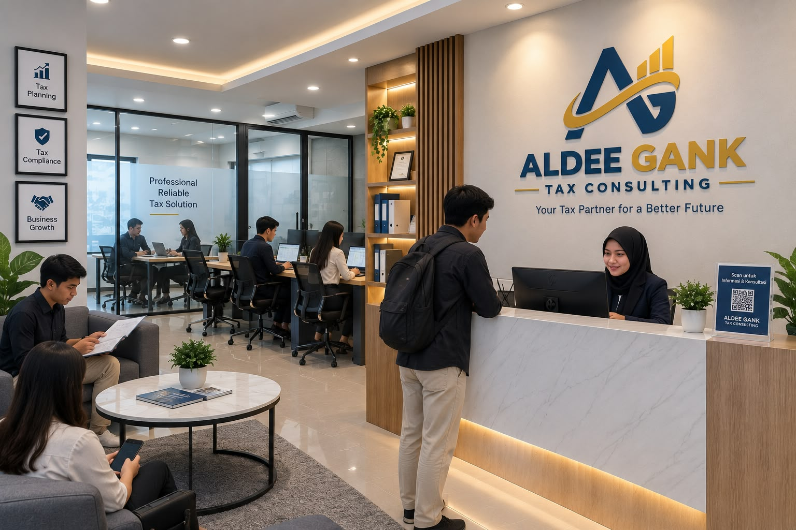

Our Profile & Vision
ALDEE GANK is a professional tax consulting office that helps companies and individuals manage their tax obligations efficiently, accurately, and in accordance with applicable tax regulations in Indonesia.
Our vision is to become a partner who can help business owners achieve good tax compliance while supporting business growth.
ALDEE GANK provides tax consultation, calculation, and reporting services through a simple process that is easy for clients to understand.
Tax Services

Our Main Services
- Corporate & Individual Income Tax: Calculation, reporting, and income tax planning.
- VAT & Luxury Goods Sales Tax: Tax Invoice management and VAT periodic tax return reporting.
- Annual Tax Return Reporting: Assistance with the preparation and submission of annual tax returns.
- Tax Audit Assistance: Assistance in dealing with tax audits from tax authorities.
3 Easy Steps to Use Our Services
- Initial Consultation: Discussion about your tax needs and problems.
- Analysis & Strategy: We conduct an analysis and provide tax recommendations.
- Execution & Reporting: Completing tax administration and reporting on time.
Contact Us & Official Information
Our Advantages
We maintain data confidentiality, calculation accuracy, and strive to keep up with the latest tax regulations.